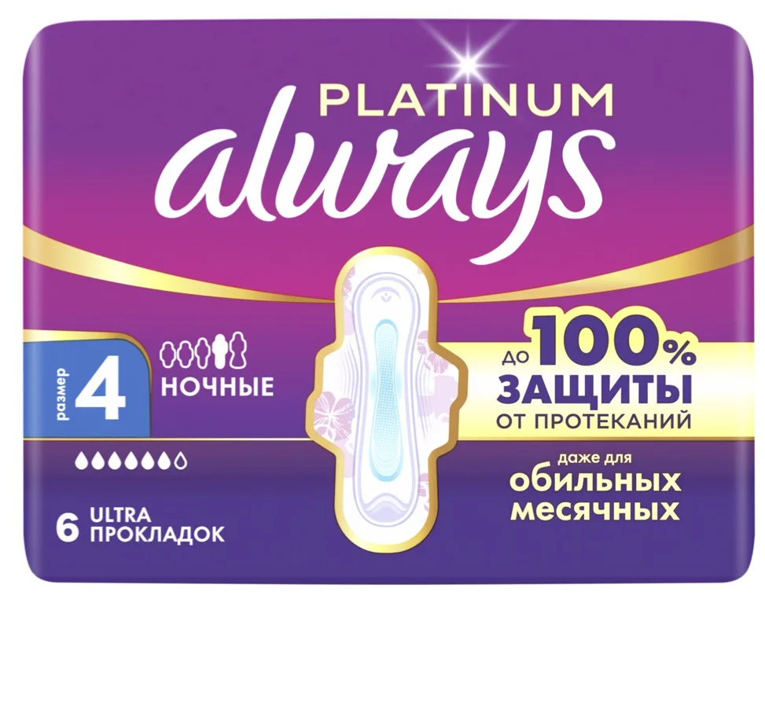

Привет! В этом проекте хорошо развивается тонкая драма: с помощью игры актёров, движения камеры и света мы создаём ситуацию, в которой девушки узнают себя.
Меня зовут Дамир, я режиссёр рекламы с 2019 года.
Я люблю, когда все режиссёрские, операторские и монтажные решения работают на задачу, а нужные смыслы доносятся быстро и однозначно, без побочных. В формате 15 секунд это особенно важно.
Поэтому сначала строим прочный фундамент — рекламную механику, а уже на ней строим наши решения.
01Механика ролика
Раз мы в атмосфере кинозала, разберём рекламную механику в трёх актах.
Ситуация
Девушка с подругой в кинотеатре, в общественном месте, в критические дни.
Триггер
Девушка встаёт, и подъём вызывает gush-момент. Возникает интрига: сработала защита или нет.
Развязка
Хеппи-энд. Героиня пользуется Always Platinum, беспокоиться не о чем.
- Кинотеатр, сеанс закончился.
- Героиня с подругой встаёт.
- Красный световой эффект. На лице героини gush, испуг сменяется улыбкой.
- Продуктовая часть: продукт, демо, доказательство.
- Героиня с подругой, улыбаясь, уходят.
- Пэкшот.
Героиня встаёт последней
Будет классно, если героиня с подругой немного задержатся и встанут чуть позже остальных. Это даст визуальный акцент: все уходят, а наши героини ещё сидят.
И самое главное — мы видим причину gush-момента. Мы ловим момент, когда девушка встаёт, и понимаем, почему она на мгновение испытала страх: потому что она встала.
02Gush-момент
Вот мы и добрались до хука ролика — момента, когда ставки высоки и может произойти что угодно.
В нашем инструментарии два зрелищных эффекта: красный софит и салют. Оба выглядят эффектно и доносят метафору. Предлагаю два варианта на выбор.
Салют и софит
Чтобы мы увидели салют и почувствовали тревогу вместе с героиней, камера опускается с обычной высоты вниз и снимает героиню снизу вверх. Так получаем эффектный кадр, а салют на фоне высоты зала выглядит уместнее, чем на фоне кресел и людей.
Салют делаем графикой.
Свет
Снимаем всю ситуацию одним кадром: камера подлетает к героине через весь зал до крупного эмоционального плана. Встав, героиня попадает в луч кинопроектора — конечно, это специально поставленный нами свет. В нужный момент холодный свет проектора становится красным, а зал приглушается ещё сильнее: убираем лишние акценты с уходящих людей и оставляем чувства девушки.
Красный свет падает на героиню сзади, а спереди её освещает мягкий тёплый свет, чтобы не уйти в хоррор. В конце кадра девушка улыбается.
Мне нравится этот вариант: он лучше передаёт эмоции и не отвлекает от девушки и её чувств.
Улыбка — решающий фактор
Чтобы наглядно передать переход от страха к уверенности, я предлагаю показать улыбку ещё до продукт-шотов. Так мы не оставляем девушку «протёкшей» до продуктовой части и передаём уверенность: казус не произошёл и не произойдёт. А продуктовый блок объясняет почему.
Продукт-шоты делят ролик на две части, и момент улыбки определяет, как зритель считывает видеоряд.
Улыбка после продукт-шота
Это воспринимается так, будто страх всё же оправдался, и продукт подан как решение уже случившейся проблемы. После продукт-шота мы видим параллельную вселенную, где у неё был продукт.
Улыбка до продукт-шотов
Мы лишь на мгновение ощущаем риск, когда девушка встаёт, но почти сразу она понимает, что беспокоиться не о чем: страх сменяется улыбкой. В этой версии продуктовая часть становится причиной, по которой девушка улыбается.
03Финал
Супероружие
Сразу после продуктовой части предлагаю поставить кадр с сумкой — как возвращение от продукта к разрешённой ситуации. Продукт в сумке выглядит стильно: он её спас и уберёг от протекания. Поэтому нам важно его увидеть.
И я добавляю короткий жест: рука прячет пачку в сумку. Это даёт два плюса:
- Продукт выглядит как секретное супероружие, которое у девушки всегда с собой.
- Мы снимаем вопрос: в жизни прокладки не торчат из сумки напоказ, их прячут.

Хеппи-шот
После кадра с сумкой, его продолжением, мы видим наших героинь: они, улыбаясь, идут на камеру и мимо неё, освобождая кадр под пэкшот.
Суть кадра — хеппи-энд: всё сложилось наилучшим образом. Счастлива героиня, счастлива подруга.
Кадр за кадром
Конец сеанса
Общий план зала. В приглушённом свете люди встают и тянутся к выходу. Героиня с подругой ещё сидят.
Камера летит к героиням
Через зал к двум подругам. Они встают последними, мы ловим этот момент.
Gush
Крупный план. Героиня поднимается в кадр, луч проектора становится красным, зал гаснет. Секунда испуга — и улыбка. В варианте 1 склейка на ракурс снизу, над головой салют.
Always Platinum
Продукт крупно.
Демо
Защита от протеканий и скорость впитывания.
Сумка
Пачка в сумке героини, рука прячет её внутрь.
Хеппи-шот
Подруги, улыбаясь, идут на камеру и мимо неё, освобождая кадр.
Пэкшот
Пачка Always Platinum и логотип.
04Реализация
По демо-части вариант с шёлком действительно хорош. Также можно снять классический вариант с ватным диском — он нагляднее.
Видеоряд приглушён, но остаётся мягким и приятным. Приглушённая картинка нужна, чтобы сработали световые эффекты и лучи. К тому же для кинотеатра это естественно.
Во второй версии будет другой каст героинь. Важно учесть и стиль их одежды, чтобы героини узнавались.
15 секунд и адаптации на 10 и 6 секунд · горизонталь и вертикаль · русский и казахский.